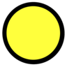

16.1. Creating tasks¶
Tasks on the client (tablet, desktop) are written in C++. All client tasks are classes that inherit from the Task class, define their database structure, and implement an editor() function that implements the task itself. Typically, one of two methods is used:
- Simple tasks create a Questionnaire object and use questionnaire elements (described below) to capture user responses. Arbitrary logic is possible, both in terms of what constitutes “enough information” and in terms of page flow (see e.g. the CIS-R).
- Complex tasks create a graphics widget and manipulate Qt graphics objects directly, giving arbitrary power. Examples include the IDED3D task
On the server, a single Python class represents the task. It must define its database structure and provide an HTML view on the data (used for the HTML and PDF representations). More or less everything else is optional, but tasks may provide numerical summary information (for trackers) or customize their clinical text views.
16.1.1. Questionnaire elements¶
Programmers can embed arbitrary logic in a task. Several elements are available; all inherit from QuElement. Elements are grouped into pages (QuPage).
16.1.1.1. Display/sound¶
These elements are primarily for static display (though, for example, the programmer can manipulate the contents of static text dynamically).
- QuAudioPlayer. Allows sounds to be played.
- QuBackground. Widget that is styled (via CSS) to have a colour. Used to create striping background effects for custom tables (etc.).
- QuHeading. Subclass of QuText; displays headings.
- QuHorizontalLine. A horizontal rule or line.
- QuImage. A static image.
- QuSpacer. A fixed-size spacer.
- QuText. Static text.
16.1.1.2. User input¶
- QuBoolean. An element to control a single boolean (0/1/NULL) field. It may display text or an image. The text may appear as a button or with an adjacent widget. Some possible appearances:
- QuButton. A button, used to execute arbitrary code.
- QuCanvas. A canvas for sketching, which can take a default or background image.
- QuCountdown. A countdown timer.
- QuDateTime. Date/time input method.
- QuDiagnosticCode. Allows searching and selection of diagnostic codes using a recognized system (e.g. ICD-10).
- QuLineEdit. One-line text editor. (For a bigger version, see QuTextEdit.)
- QuLineEditDouble. A one-line editor for a floating-point number, allowing constraints.
- QuLineEditInteger. A one-line editor for an integer (C++ int), allowing constraints.
- QuLineEditLongLong. A one-line editor for a large signed integer, allowing constraints.
- QuLineEditULongLong. A one-line editor for a large unsigned integer, allowing constraints.
- QuMcq. A simple 1-from-many or multiple-choice question (MCQ), with a range
of layout and visual options.
- Unselected:
 or Option
or Option - Unselected and a response is required:  or Option
- Selected: or Option
- Unselected:
- QuMcqGrid. An MCQ specialized to operate in a grid, with lots of questions having a common set of possible answers.
- QuMcqGridDouble. A specialized MCQ with a double grid (lots of questions having a common pair of sets of possible answers; e.g. for each question, pick one from A/B/C and pick one from X/Y/Z).
- QuMcqGridSingleBoolean. Another specialized MCQ; as for QuMcqGrid but with an additional Boolean variable per question (e.g. for each question, pick one of absent/mild/moderate/severe, and tick if distressing).
- QuMultipleResponse. An n-from-many (multiple response) question.
- Unselected:
 or Option
or Option - Unselected and more responses required:
 or
Option
or
Option - Selected:
 or Option
or Option
- Unselected:
- QuPhoto. Uses the device camera to take a photo.
- QuPickerInline. Pick from a list of options using a spinner or similar interface.
- QuPickerPopup. Pick from a list of options using a pop-up selector.
- QuSpinBoxDouble. Offers a text editing box with spinbox controls, for floating-point entry.
- QuSpinBoxInteger. Offers a text editing box with spinbox controls, for integer entry.
- QuSlider. A slider, for discrete or continuous numerical variables.
- QuTextEdit. An expanding editor for entering large quantities of text. (For a smaller version, see QuLineEdit.)
- QuThermometer. A thermometer-style visual analogue scale.


{kind=link}
{kind=link}
{kind=link}
16.1.1.3. Layout¶
These elements are simply for layout:
- QuFlowContainer. A container that flows its contents like a word processor flows words.
- QuGridContainer. A container implementing a grid of cells, like a table.
- QuHorizontalContainer. Arranges other elements in a horizontal row.
- QuVerticalContainer. Arranges other elements in a vertical column.